Flexbox（弹性盒布局模型）
介绍
小课堂【成都第53期】
分享人：何华飒
目录
1.背景介绍
2.知识剖析
3.编码实战
4.扩展思考
5.参考文献
6.更多讨论
一、背景介绍
Flexbox布局的诞生，是为了提供一种更佳有效的布局方式，更有效率的处理某些特殊布局(例如垂直居中）。它可以更好的控制项目的对齐和自由分配容器空间，即使它们的大小是未知的或动态的，因此得其名"flex"。
Flexbox可以简便而完整的实现各种页面布局，可作为display属性 、position属性 、 float属性等布局方式的补充。
二、知识剖析
1、Flex布局是什么？
Flex是Flexible Box的缩写，意为"弹性布局"，其主要思想是通过控制项目的宽度、高度，使其可以自动填满容器的可用空间，适应所有类型的显示设备以及屏幕大小。
任何一个容器都可以指定为Flex布局,行内元素也可以使用Flex布局。
优点：提高网页布局的效率，几行代码就可以很好的控制元素的对齐、居中等。
缺点：“弹性布局”，间距、宽高等无法固定。
2、基本概念
采用Flex布局的元素，称为Flex容器（flex container），简称"容器"。它的所有子元素自动成为容器成员，称为Flex项目（flex item），简称"项目"。
注意：Flex容器不是块容器，因此有些设计用来控制块布局的属性在Flexbox布局中不适用。例如float、clear属性和vertical-align属性在Flex容器上就没有作用。

容器默认存在两根轴：水平的主轴（main axis）和垂直的交叉轴（cross axis）。主轴的开始位置（与边框的交叉点）叫做main start，结束位置叫做main end； 交叉轴的开始位置叫做cross start，结束位置叫做cross end。项目默认沿主轴排列。 Flex项目的在主轴方向的宽度或高度，就是项目的主轴长度叫做main size，Flex项目的在侧轴方向的宽度或高度，就是项目的侧轴长度，叫做cross size。
3. 父级属性
- flex:direction 设置主轴方向,确定子元素主轴排列方式
- justify-content 主轴上子元素对齐方式
- align-items侧轴子元素对齐方式
- flex:wrap 主轴宽度不够时是否换行显示
- flex-flow 是flex-direction属性和flex-wrap属性的简写形式
- align-content 侧轴上有剩余空间时,侧轴对齐方式
4 .子级属性
- order 子元素排列顺序
- flex-shrink 子元素收缩比率
- flex-grow 子元素扩展比率
- flex-basis flex-basis属性定义了在分配多余空间之前，项目占据的主轴空间（main size）。浏览器根据这个属性，计算主轴是否有多余空间。它的默认值为auto，即项目的本来大小。
- flex 是flex-grow,flex-shrink 和 flex-basis的简写
- align-self 允许单个项目有与其他项目不一样的对齐方式,可以覆盖弹性容器的默认的侧轴对齐方式(align-items)
5. 属性详解
flex-direction
row（默认值）：主轴为水平方向，起点在左端。
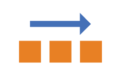row-reverse：主轴为水平方向，起点在右端。
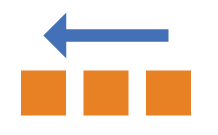column：主轴为垂直方向，起点在上沿。
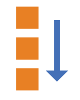column-reverse：主轴为垂直方向，起点在下沿。
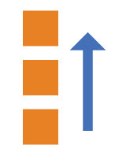demo1
justify-content
center水平居中对齐
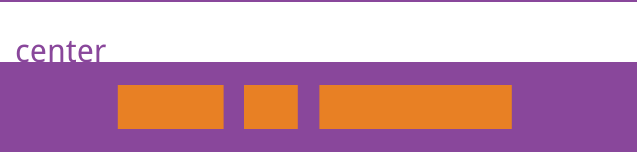flex-start水平靠左对齐
flex-end水平靠右对齐
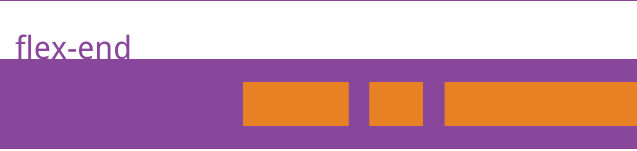space-around水平均匀分布
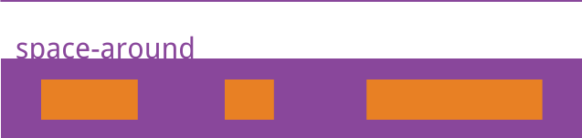space-between水平两端对齐,每个项目两侧的间隔相等。
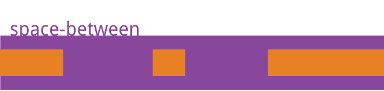demo1
align-items
stretch默认值，拉伸等高,占满容器高度
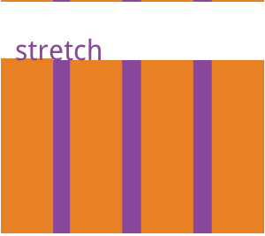flex-start垂直顶部对齐
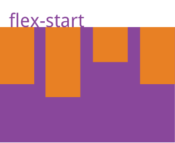flex-end垂直底部对齐
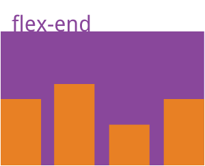center垂直居中对齐
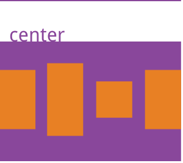baseline项目的第一行文字的基线对齐
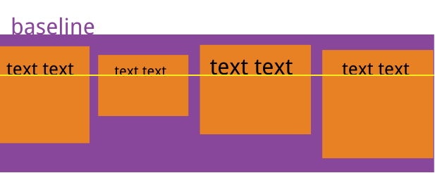demo1
flex-wrap
nowrap默认值,不换行
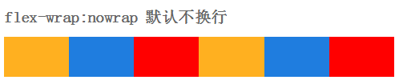wrap换行显示
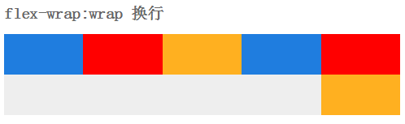wrap-reverse逆序换行显示
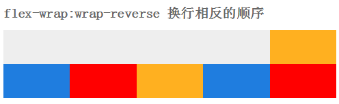demo1
align-content
stretch默认值,拉伸,占满容器高度，项目高度由项目内容决定
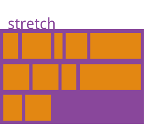flex-start垂直顶部对齐
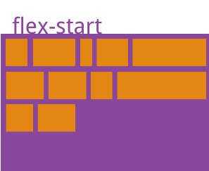flex-end垂直底部对齐
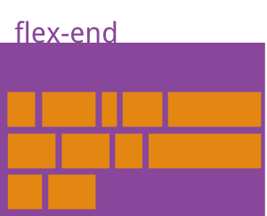center垂直居中对齐

space-between垂直两端对齐
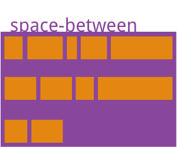space-around垂直轴均匀分布
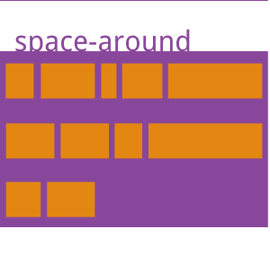demo1
order子元素排列顺序（默认值为0）
设置的值越小越靠前

flex-grow子元素扩展比例
剩余宽度 * 占比值/总比值
默认值为0，即如果存在剩余空间，也不放大。
如果所有项目的flex-grow属性都为1，则它们将等分剩余空间（如果有的话）。如果一个项目的flex-grow属性为2，其他项目都为1，则前者占据的剩余空间将比其他项多一倍。

flex-shrink子元素收缩比例
溢出宽度 * 占比值/总比值
默认值为1,即如果空间不足，该项目将缩小。都为1的话，均匀缩小。
如果所有项目的flex-shrink属性都为1，当空间不足时，都将等比例缩小。如果一个项目的flex-shrink属性为0，其他项目都为1，则空间不足时，前者不缩小。

flex-basis
属性定义了在分配多余空间之前，项目占据的主轴空间（main size）。浏览器根据这个属性，计算主轴是否有多余空间。它的默认值为auto，即项目的本来大小。它可以设为跟width或height属性一样的值（比如350px），则项目将占据固定空间。align-self
align-self属性允许单个项目有与其他项目不一样的对齐方式，可覆盖align-items属性。默认值为auto，表示继承父元素的align-items属性，如果没有父元素，则等同于stretch。该属性可能取6个值，除了auto，其他都与align-items属性完全一致。

三、编码实战
demo1四、拓展思考
flex布局最常用的是什么场景？
一般实现垂直居中是一件很麻烦的事，但flex布局轻松解决
display:flex;
justify-content: center;
align-items: center;
五、参考文献
一个完整的Flexbox指南
css之flex兼容
六、更多讨论
请用flex布局，完成以下图案
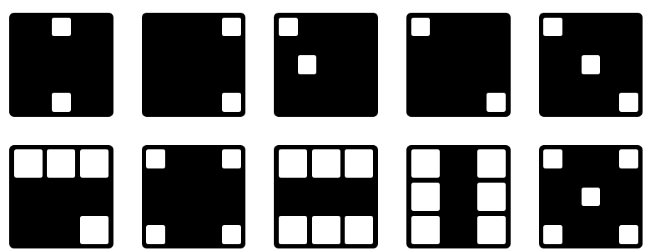 demo2感谢观看
by 何华飒